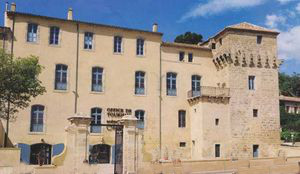
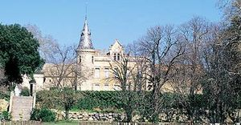
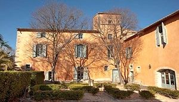
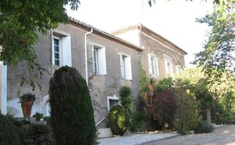
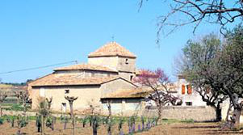
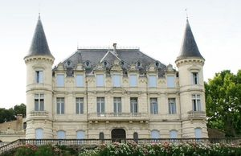
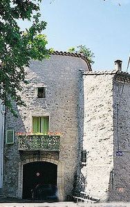

Recensement Jean-Claude Truffet
| Département | 34 — Hérault |
| Canton | Pézenas |
| Commune | Pézenas |
| Type d'édifice | Château |
| Période d'origine | XIII-XVII |







plusieurs châteaux à Pézenas à chacun son article, Fondouce, Conas, Larzac, Loubatières, Montpezat, Parc, Roquelune, la Grange des Prés et celui de Pézenas. PEZENAS Le château est mentionné pour la première fois en 990. Il suivra les vicissitudes de la ville jusqu'au rattachement du comté à la couronne. C'est ainsi qu'acquis par Simon de Montfort, il fut revendu à Raymond Salvignac. Un siècle plus tard, en 1563, Anne de Montmorency fera bâtir un donjon, logement du gouverneur et des abris pour recevoir trois cents hommes de garnison, les appartements furent garnis d'un mobilier nouveau. Cependant la révolte de juillet 1632, allait devoir à l'édifice un funeste avenir. Le premier octobre 1632, un édit de Louis XIII en ordonne la démolition. Le prix fait est passé tout d'abord avec Jean Pithon qui confie le 4 mars du même mois, la besogne à Jean Thomas maître-charpentier. Après la démolition, les consuls firent entourer les ruines d'un parapet et élevèrent sur les anciens murs deux guérites carrées, qu'un ouragan démolit le 22 janvier 1689. Devenue bien communal, la motte du château fut inféodée à plusieurs reprises, puis vendue le 25 août 1802 au notaire Joseph Ebrail qui y créa un jardin. Peut-être est-ce dernier qui fit bâtir la maison actuelle.
Pézenas; La motte qui le supporte est en réalité composée de deux buttes superposées, c'est sur la seconde plus réduite que se dressait le château. L'édifice nous est mal connu. On sait qu'il était séparé de la ville par un fossé que l'on franchissait par un pont-levis. La courtine était percée de deux portes, dont la porte gaillarde. Le château possédait neuf tours, dont deux tours d'angle circulaires au toit en poivrière, les autres étant couvertes d'une terrasse, et une tour-porte de plan carré. Au centre se dressait le donjon. Le château renfermait également une prison, des communs, un four et une citerne. De nombreuses réparations furent effectuées jusqu'à sa démolition. En 1454, le pont-levis est refait tout neuf, à la fin du XVIe siècle, l'enceinte médiévale est encore entretenue, mais au cours des dernières années, devant l'extension irrésistible de la ville vers l'ouest, la nécessité d'une nouvelle fortification se fait sentir. Les nouveaux remparts, précédés d'un fossé, entouraient ce qui étaient jadis le "barri" ou faubourg et qui deviendra bientôt dans les textes le "nouvel enclos". Sa forme générale n'est que l'agrandissement du dessin du Moyen-Age, avec la même orientation et une disposition identique des accès. Raccordée à la courtine médiévale à l'angle Sud Est de la commanderie, la nouvelle fortification longeait la promenade du pré, puis, suivant l'actuelle avenue de Béziers, empruntait le boulevard Sarrasin, le chemin de la Faissine, l'avenue Gabriel-Mazel, où elle subsiste encore en partie dans les jardins de l'hôpital, pour rejoindre le rempart médiéval près de la Porte Faugères, place Ledru-Rollin. Cinq nouvelles portes ont été ouvertes, pour la plupart dans le prolongement de celles du Moyen-Age, les portes de la Grave, de Castelnau, Conti, de Béziers, de Faugères.
Famille de Raymond Salvignac
"
Pézenas, Peyrat office du tourisme,Bébian,Fondouce, Conas, Larzac, Loubatières, Montpezat, Parc, Roquesol, st-Martin de Graves